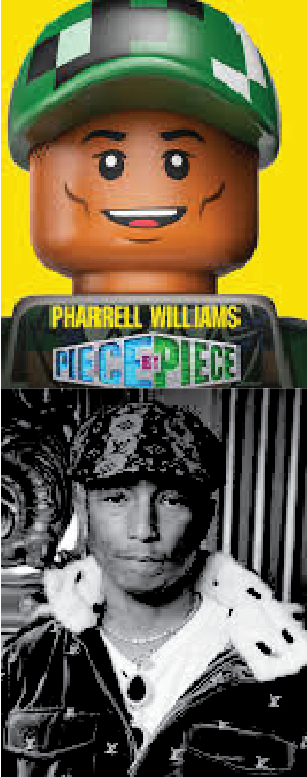
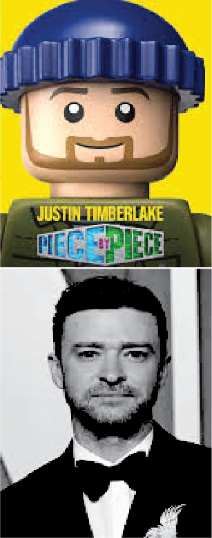
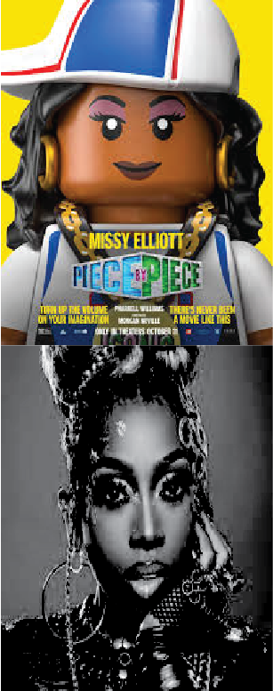
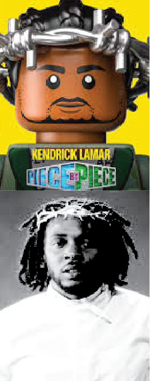
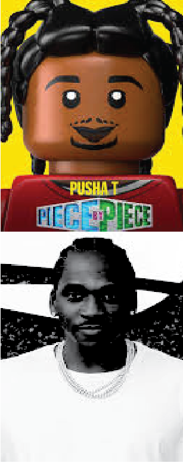
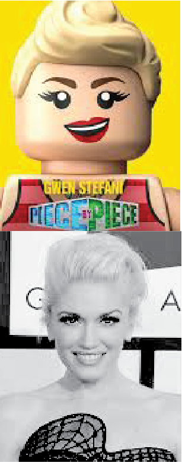
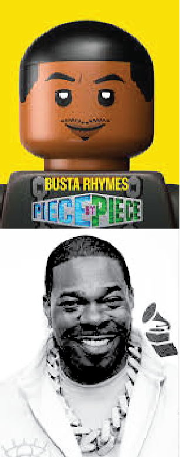
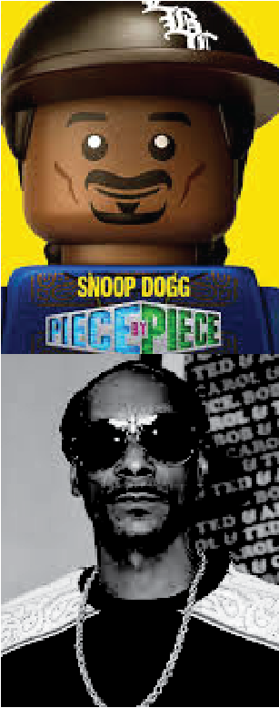

Pharrell Williams, Morgan Neville, Kendrick Lamar, Gwen Stefani, Timbaland, Snoop Dogg, Justin Timberlake, Jay‑Z, N.O.R.E., Chad Hugo, Busta Rhymes, Pusha T, Shay Haley, Oprah Winfrey, Missy Elliott, Helen Lasichanh, Jimmy Iovine, Rob Walker, Teddy Riley, Mimi Valdés, Tyler The Creator








CLIPS
SCRIPT
PIECE BY PIECE
complete transcript - 2024 documentary film
[OPENING SCENE]Hold on,I've been waiting so longIs this how this feels?(electronic fanfare playing)It's happeningYes, it's really happeningThis is real(fanfare ends) -BABY: Dada.-PHARRELL WILLIAMS: Yes, sir.-BABY: Dada.-PHARRELL WILLIAMS: Yes, sir.-(kids chattering playfully)Careful. Don't crash.(baby squealing)You okay?Yeah, but you're not supposed to have that on the table, buddy.-BABY: Dada.-PHARRELL WILLIAMS: So, can you do me a favor and tell everybody I'm trying to do an interview for the film?-HELEN WILLIAMS: Okay, babe.But just tell the kids to be-- quiet down, like...(kids chattering and babbling)-MAN: And good morning, brother.-PHARRELL WILLIAMS: Hey.-MORGAN NEVILLE: Are we good?-MAN: Yeah. All set.-MORGAN NEVILLE: Okay.-PHARRELL WILLIAMS: Hey.Hey, how you doing, man?Good to see you. How's it going?We're recording? Yeah?-MORGAN NEVILLE: Yeah, yeah.Okay, cool.Quiet on the set!-PHARRELL WILLIAMS: You know what I always thought about?-MORGAN NEVILLE: What's that?-PHARRELL WILLIAMS: What if, like...What if nothing's new?(whooshing)What if life is like a LEGO set?(satellite beeping)And you can put 'em together whatever way you want.But you're borrowing from colors that already existed.Does that make sense?-MORGAN NEVILLE: Um...-PHARRELL WILLIAMS: You know what would be cool is if, like, we told my story with LEGO pieces.(chuckles)-MORGAN NEVILLE: Seriously?-PHARRELL WILLIAMS: Yes.-MORGAN NEVILLE: LEGO?-PHARRELL WILLIAMS: Yes.-MORGAN NEVILLE: Mm-hmm.-PHARRELL WILLIAMS: Just imagine all the color that would bring to it.-MORGAN NEVILLE: Sure.-PHARRELL WILLIAMS: Limitless color.-MORGAN NEVILLE: Mm-hmm.-PHARRELL WILLIAMS: This is the best way I can really be my purest self...-MORGAN NEVILLE: Yeah.-PHARRELL WILLIAMS: ...without feeling weird.-MORGAN NEVILLE: Okay. (chuckles)-PHARRELL WILLIAMS: Man, I'm saying just... Just be open. Just be open.-MORGAN NEVILLE: So, what would you be wearing in this interview, then?-PHARRELL WILLIAMS: Dad hat, T-shirt, shorts, on a yellow electric bike.(bicycle bell rings)-MORGAN NEVILLE: 'Kay.Moving on.Here's an easy question.(chuckles): Well, maybe it's easy, maybe it's hard.Where are you from?-PHARRELL WILLIAMS: I'm from the mud. ("Maybe" by N.E.R.D. playing) Close to the fabled Atlantis.Uh-huhAnd it was born in a cloudWith silver liningI just became obsessed with, like, water, you know?And, like, King Neptune.And voilàI feel like my obsession with water triggered something in me.-(trident ringing)Different kinds of abilities.I don't know where it's from.But I knew I was different.-(bowl clatters)-(water splashes)-MORGAN NEVILLE: Really?-PHARRELL WILLIAMS: I've always grappled with that.(water flowing)See, maybeThere was something wrongAnd you weren't telling meNo, ohSee, see, maybeThe laugh's on meAnd life was telling me a joke-PHARRELL WILLIAMS: I'm from Virginia Beach.The beach was less than a mile from Atlantis, the housing project where I grew up.The suburbs thought this was the hood, but really this place was magical.(band playing "Maybe")-(dog barks)Hey, yeah(drumming to music)You'd just witness music bouncing off the walls.And the Blue Angels, they would fly over my housing project.-(rumbling, rattling)We lived in the crash zone, so we had the best view.-(baby crying)-(song ends)-(people murmuring)(jet engines whooshing)You couldn't tell me that life was not amazing.And I loved music.Like, everybody loves music, but I'm realizing I had a different kind of relationship with it.Like, it was-- literally was mesmerizing to me. ("I Wish" by Stevie Wonder playing) I didn't even know that I was mesmerized.I just thought that's what all Black kids did.I thought we all just stared into the speaker like...Whoa.Looking back on when I was a little nappy-headed boyI was seeing colors.It's called synesthesia.It's not something that you see with your physical eyes.It's something that you see in your mind's eye.(exclaims)Trying your best to bring the water to your eyesThinking it might stop her from whupping your behindAll the Stevie music would do it to me.Beautiful hues of light cascading.I wish those days could come back once moreWhy did those days ever have to go?'Cause I love them soI would just start the record over and start it over and over and over.Doing whatever it took to continue to make it happen.Why did those days ever have to go?I wish those...(record scratches, song stops)-PHAROAH WILLIAMS: Man, he was way out there.He must have got it from his mama.-CAROLYN WILLIAMS: Oh, my God.(chuckles)-PHAROAH WILLIAMS: And me.(laughs)-CAROLYN WILLIAMS: As parents from a project, we needed to be encouraging and tell him like...You can do anything you want to do.-PHAROAH WILLIAMS: People are able to accomplish things because they work hard at what it is that they do.-PHARRELL WILLIAMS: That's my mom. (knocking to rhythmic beat) ("holl*back Girl" by Gwen Stefani playing) -PUSHA T: We basically lived in the same neighborhood.We were kids, so it was like, "Hey, we're gonna ride our bikes to Mount Trashmore."-PHARRELL WILLIAMS: And I was the kid in the neighborhood with the skateboard.(lively chatter)-(excited chatter)Yeah.We explored everywhere.(seabirds calling)We would go to neighborhoods and point at massive houses and dream. Virginia Beach Oceanfront was the congregating place for anybody who was a creative.(crowd cheering)(rapping): Timbaland, make my body hot...-PUSHA T: The best rappers there made a name.You have Timbaland, who's known as DJ Timmy Tim.(record scratching rhythmically)We all kind of knew each other from school.(lively chatter, laughter)-PHARRELL WILLIAMS: Yeah, I knew Timbaland.I knew Timbaland 'cause we were in class together, and he was cool with Missy.(pounding, clapping to music)And that's how I met Missy, through Tim.At the time, we weren't thinking we were going to be artists.We just loved doing music.-(whistle blowing rhythmically)-(crowd cheering)(band playing "holl*back Girl")In Virginia, we've been saying for years there's something in the water.(chuckles)They always say there's something in the water, but I think it's just Virginia itself.(music and cheering continue)-(song ends)-(school bell ringing) (quiet chatter) But I wasn't the best student.(garbled chatter)I found school difficult, you know?You go from being in sixth grade, where you only really had two teachers, but seventh grade was like you had seven different teachers.It was just too overwhelming.-(school bell ringing)-(fingers snapping)Hey! Earth to Pharrell.Stop daydreaming and get to work.-PHARRELL WILLIAMS: I have, like, anxiety about it and refuse to go back.So, I was in seventh grade twice. (phone ringing) The teacher contacted my mom and said, "Look, he's got enough credit to pass."And my mom was like, "No, he needs to... he needs to do it again." (door opens, closes) -CAROLYN WILLIAMS: The boy is smart.He's brilliant.But he only did enough to get by.-MORGAN NEVILLE: Do you feel like you fit in as a kid?-PHARRELL WILLIAMS: No.I was detached.And more in dreamland all the time, because oftentimes that's all I had, was my imagination.-MAN (over TV): Soul... ("Funkytown" playing) Train!-PHARRELL WILLIAMS: I wanted to escape.-TV ANNOUNCER: Hello and welcome aboard.You're right on time for another ride on the big train. (channel changes) -SPOCK (TV): Live long and prosper.-PHARRELL WILLIAMS: TV, for me, became like this magical place where, like, my imagination would just run super wild. Town to keep me moving, keep me groovingWith some energyWell, I talk about it, talk about it, talk about itTalk about it...-CARL SAGAN (TV): Even in the outskirts of our own solar system, we humans have barely begun our explorations.-PHARRELL WILLIAMS: Carl Sagan's way of looking at life was amazing to me. (warbling)-(gasps)-(laughs) (song ends) I felt like everybody else was like, "Oh, that's an odd child. He's odd."And that crushed my spirit. So I didn't know what the hell I was gonna do. (choir vocalizing)-(choir continues vocalizing)-(rhythmic clapping) (scattered whoops, chatter) Hold your head, lil' bruhYou're not dead, lil' bruhYou are brownAnd this world is black and white, lil' bruhI know how it sounds, lil' bruhBut you'll be all right, lil' bruhYeah, yeahI bet this song makes no sense to youWith the world on your shouldersWhat can you see?God blessed us all with the gift to pursueJust clear your mind and you'll feel like meYeah -PHAROAH WILLIAMS: I remember his grandmother telling him that she had a dream.Pharrell was lifted up.He was suspended in the air, way up in the sky among the stars.And she said...-GRANDMA: God has given you a special gift, but to whom much is given much is required. You were made to amazeAnd bring change, lil' bruhIt takes one to know one, bruhSo here's one to goin' on, bruhYeahGet your hands upCome on, lil' bruhJust shout it out, come onJust shout it out...(song fades) -MORGAN NEVILLE: Were you making any music yet?-PHARRELL WILLIAMS: No, 'cause I didn't take band in my first time in seventh grade.-MORGAN NEVILLE: I mean, like, even singing or playing piano or anything?-PHARRELL WILLIAMS: The closest I came to music was lining my grandmother's pillows up off of her couch and taking the cake mixer and a whisk.And those were my drumsticks. (shaking rhythmically)(tapping rhythmically)(playing rhythmic beat) She saw that in me, and that's when, in the seventh grade, she got me a snare drum. (playing drumbeat) But she started me on my path.My grandmother was the one that was like, "Listen..."When you go back to school, you should take music. (band playing Justin Timberlake's "Señorita") (song continues louder) -PHARRELL WILLIAMS: And that's when I met Chad.Chad understood colors in music, and we bonded on that.(vocalizing) Ladies and gentlemen, huhIt's my pleasure to introduce to youHe's a friend of mineIt feels like something'sHeating upCome on (laughing) -PHAROAH WILLIAMS: Both of them was kind of different.They was like little nerds.Chad was always kind of quiet.(cymbals clanging)-CHAD HUGO: I mean, it's true.(laughing): Yeah.-CAROLYN WILLIAMS: But to see the two of them do music together, it's like they read each other's minds. (tapping rhythmically)(playing N.E.R.D.'s "Rock Star") We were just being ourselves and were just-just having fun, you know?-PHARRELL WILLIAMS: Chad is literally like a savant.I've learned so much from him. -SHAE HALEY: He was like, "I met this kid named Chad. He has some music equipment at his house. We should go and check it out."We started going over to Chad's house, over the garage.-PUSHA T: I'm sorry, I have to say it.We skipped so much school.It was so bad. (playful chatter, laughter) -MISSY ELLIOTT: Every day, we would create songs.Everything sounded futuristic.-PHARRELL WILLIAMS: "Let's try this. Let's try that."It's like the person who invented peanut butter and jelly.(laughing maniacally)
[CONTINUED]It's like a weird mixture.And if you can pull it off,it becomes something newand different.It feels good. I like that.-PHARRELL WILLIAMS: It's alive!-(thunder crashes) You can't be me,I'm a rock starI'm rhyming on the topof my cop carI'm a rebeland my .44 pops farIt's almost over now,it's almost over nowI guess you ain't heardthat we swallow guysIt's too damn lateto apologizeWhen you see the mantleor when you see the skiesIt's almost over now,it's almost over now. -(song ends)-(crowd cheering) -PHARRELL WILLIAMS: Chad.-CHAD HUGO: Yeah?-PHARRELL WILLIAMS: We need a name.-CHAD HUGO: Yep.-PHARRELL WILLIAMS: What do you think it should be?-CHAD HUGO: Um... I don't know.Don't know. -PHAROAH WILLIAMS: Pharrell, he wanted moreout of lifethan just making it, you know? I think he had a jobat McDonald's for 30 minutes.(Carolyn laughs)He had a whole separate businessselling nuggetsout the back door.(laughs)-PHARRELL WILLIAMS: Dealing nuggets? No.That never happened.Nice, Shae. Nice one.(lively chatter, laughter)-SHAE HALEY: And he wouldcome home with, like,at least a hundred nuggets.They were so good.(excited chatter)But it's the reason I got fired,'cause I was eatingall the time.-PHARRELL WILLIAMS: You got fired?-SHAE HALEY: Yeah, I got fired.Three times. (over speakers):A number one, extra large.You want some fries with that? -PHARRELL WILLIAMS: Remember, this isVirginia Beach, Virginia. (over stereo): I getknocked down, but I get up... It's like very Normalville, USA.There's no...no music industry there.I couldn't relate to it.And I thought, "Well, damn,how am I gonna make it out?" -(rumbling, whooshing)Huh?And then, out of nowhere... (birds squawking) ...the biggest producerin the world at the timecomes to Virginia Beach. -PHARRELL WILLIAMS: I was looking at the future. -(neon sign buzzes)-(microphone feedback hums) -ANNOUNCER: Ladies and gentlemen,get ready forthe new jack swing king. ("My Prerogative" by Bobby Brown playing) -(engines roaring)-(tires squealing) -ANNOUNCER: He's produced hitsfor Keith Sweat,Jazzy Jeff and the Fresh Prince,and of course Michael Jackson.Teddy Riley in the house. (crowd cheering) -SHAE HALEY: What's the chancesof the hottest producermoving within walking distancefrom your high school?I was in disbelief.It's kind of like sayingE.T.'s hanging out at the mall. (people screaming) That shook our town up. Everybody's talkingall this stuff about me-Now, now -Why don'tthey just let me live? (song stops) -TIMBALAND: But I don't thinkit brought change to the citybecause it wasn'topened up like that to the city.You know what I'm saying?It was Teddy Riley's studio. -MORGAN NEVILLE: So, Mr. Riley,where did this all begin? -TEDDY RILEY: The story of Pharrell beganwith these two policewomen.-MORGAN NEVILLE: Police?-TEDDY RILEY: Yes. (siren chirps) They just kept comingto the studio.And they were like...Why is it that y'all thinky'all can come in hereand do y'all musicand not do nothin'for the community? -TEDDY RILEY: We would love to do somethingfor the community,if you can do us a favor.-POLICEWOMAN: Now you want favors.Okay, what is it?-TEDDY RILEY: Yeah, what is it?-POLICEWOMAN: Introduce us to the principalof that school.We would like to dotalent shows.-TEDDY RILEY: Oh, okay.-POLICEWOMAN: Okay. Bonita Applebum,you gotta put me onBonita Applebum, I saidyou gotta put me on... -TAMMY LUCAS: I was on the panel.Teddy said thatthe winner would get to cometo Future Studiosand work with him.If we do this right, whoa. -(scattered applause)-(accordion plays awkwardly) -HOST: All right. All right, now.How many of you are readyfor Teddy Riley? (crowd cheering) -MORGAN NEVILLE: Do you even rememberwhat the music was? -TAMMY LUCAS: It was a lot of, like,baby Whitney Houstons.(vocalizing)All of the judges were like,"These people arethe next greatest singers." -("I Will Always Love You" playing)And I...I...I will al-- -(song stops)-(shoes tapping rhythmically) -HOST: All right, last but not least,here come The Neptunes! -TAMMY LUCAS: But when Pharrelland The Neptunes came on... (crowd cheering) ...I was like...Oh, these guys are different. (electric keyboard chords playing)-(clears throat)-(rap beat begins) (rapping): Yes, it is he,Magnum the Verb LordMermaid City iswhere I was bornI prefer wordsinstead of using swordsBut heads are coming offonce I press recordMarching cavalier,that's in my bone marrowA Black martianwith alien carolsLet me explainwhy I'm a multi-hyphenRaised in Atlantis,of course I love PoseidonFrom Virginia Boy,from Virginia BoyFrom Virginia Boy,from Virginia Boy, what... -TEDDY RILEY: It went fromone thing to another.Pharrell went from rapping-to singing,-(vocalizing)-and then got on the drums.-(crowd exclaiming)It felt like the most incrediblefreestyle performance. -(song ends)-(crowd cheering) And I just knewthat's what I'm looking for. -TEDDY RILEY: A'ight, guys, let's lookat what we have here.Mr. Pharrell.-PHARRELL WILLIAMS: Yes, sir.-TEDDY RILEY: Chad.-CHAD HUGO: Yes, sir.-TEDDY RILEY: Shae.-SHAE HALEY: Yo.You know, we're looking fornew artists and new vibes.So...-PHARRELL WILLIAMS:(stammers) Yes.-TEDDY RILEY: Oh, wow, okay. -PHARRELL WILLIAMS: Absolutely. Can't wait. -TEDDY RILEY: Here you have it. (fingers snap)(door opens, closes)(laughs)-PHARRELL WILLIAMS: Whoa. It's real.Oh, (bleep). (laughs)-(Chad and Shae whoop)This entire time,I'm just thinking, "I don't knowwhere life is gonna lead me,but I'm just gonna go for it." ("Everyone Nose" by N.E.R.D. playing) (knocking)-VOICE: It's The Neptunes for Teddy. -(phone ringing)-(busy chatter) -PHARRELL WILLIAMS: Teddy was, like, super busy.I think he was, like,working on Michael'sDangerous album.He just was meticulousabout everything.He would spend, like, an hourjust mixing a snare. I'm like...What is he listening to? (fingers snap) They meant business.They didn't want kidsrunning around the studio.My studio etiquettewas so wrong.You know, Teddy would playa chord, and I would go...Hey, why don't you change itto this chord? (song stops)(door opens, closes) And the engineer would justgive me the dirtiest look. -ENGINEER: Hey, man, listen.Teddy's the boss.(song resumes)Mm-hmm.When he's working,you don't say anything.-PHARRELL WILLIAMS: Yes, sir.-ENGINEER: You're lucky to be in the room.(gulps) -PHARRELL WILLIAMS: That's whereI learned discipline. (phone ringing) -TAMMY LUCAS: And a lot of times,Pharrell would give me tracks,and he would say,"Tammy, can you help mewrite some lyrics to this song?"You know what I mean?Yeah, yeah, yeah-yeah.(song ends) -PHAROAH WILLIAMS: The thing that raisedmy eyebrows wasPharrell leaving homelate at night.And I'm thinking,"This guy is wasting his time." -TEDDY RILEY: This one night,I just-- I needed helpon this record......because I didn't knowhow to really rap.I said...All right, Pharrell.-PHARRELL WILLIAMS: Yes, sir.-TEDDY RILEY: Man, I need a rap. -PHARRELL WILLIAMS: And I was like, "Really?"He was like...-TEDDY RILEY: Yes.This is a big task.This record cannot come outuntil I get the proper rap.You got it. (laughs):I don't think he had it,but he just went in the roomand freestyled it. (rapping): It's Teddy, readywith the one-two checkerWreckx-n-Effect is in effect,but I'm the wreckerOf the track 'bout the honeyShakin' rumpsand they backs in -PHARRELL WILLIAMS: And then I mimicked what he did.(slowly):Yes, it's TeddyReady withthe one-two checkerWreckx-n-Effect-- -TEDDY RILEY: And he was like...Nah, it's pretty simple.Just let it bounce. (inhales deeply) ("Rump Shaker" by Wreckx-n-Effect playing) YeahAll I wanna do iszoom-a-zoom-zoom-zoom-And a poom-poom-Just shake ya rumpAll I wanna do iszoom-a-zoom-zoom-zoom-And a poom-poom-Just shake ya rumpAll I wanna do iszoom-a-zoom-zoom-zoom-And a poom-poom-Just shake ya rumpYep, yep, it's Teddy, readywith the one-two checkerWreckx-N-Effect is in effect,but I'm the wreckerOf the track 'bout the honeyShakin' rumpsand they backs inBooties of the cutiessteady shakin' but relaxin'-Huh? -The action ispacked in a jamLike a closet,beats bound to get you up... -TEDDY RILEY: Oh, my God. All I wanna do iszoom-a-zoom-zoom-zoom-(door opens, closes)-And a poom-poom... -PHAROAH WILLIAMS: And one day he came home,he said, "Dad, this ain't badfor a first paycheck." Just shake ya rump... -PHARRELL WILLIAMS: But, I mean,I blew it in like two weeks.I mean, I was like 19 years old. I like the wayyou comb your hair, uhI like the stylish clothesyou wear, uhIt's just the little thingsyou do, uhThat makes mewanna get with you, uhAll I wanna do iszoom-a-zoom-zoom-zoom-And a poom-poom-Just shake ya rumpAll I wanna do iszoom-a-zoom-zoom-zoom-And a poom-poom-Just shake ya rumpAll I wanna do iszoom-a-zoom-zoom-zoom-And a poom-poom. -(song stops)(people groaning) -TEDDY RILEY: He wanted to try to geton another level.That gave him, like,an artistic itch. -PHARRELL WILLIAMS: So I would go upto Teddy week after weekand just sort ofquestion him, like...Man, I'm trying to makemy own music.-TEDDY RILEY: No. -PHARRELL WILLIAMS: He said I wasn't ready. (thunder rumbling) I was, like, reallyat my wits' end.I thought I might have to getout of that deal with Teddy. (church bell tolling)(door creaking) So I talkedto my pastor about it.And I remember beingso confused.Look, in Virginia,he's the only guy here.Like, what's--How is this gonna happen? -PASTOR: Listen.(organ playing hopeful music)If you're standingat the bottom of a mountain,can you see the other side?No, you can't.But does that meanthere's no other side?The other side of thatis your life leveling up.What God has for you,no man can stand in the way of.He said, "Trust God."-PHARRELL WILLIAMS: Trust God.And I did. (door creaking)(wind whistling softly) (panting) Hey. -CHAD HUGO: Pharrell would come to my housewith a beat in his head.We would tell ourselves,"We can do this." (sneezes) Let's make some music.I'm choking on french fries,(clears throat)but that's okay. (playing gentle electronic music) -PHARRELL WILLIAMS: Music was just coming out of me.Can't tell youwhere it's coming from.I don't know.I love it.Creatively, I'm going in there.I'm just reaching into oblivion,reaching into the future,and we don't know what the hellwe gonna bring back.I'm new to this.But it's awesome. (electronic music continues) For, you know, like five years,time just passes,just stacking beats. -(music swells)-(choir vocalizing) I was so ambitious.It's all I cared aboutwas, like, getting on. -TIMBALAND: Pharrell definitely wanted to bein front of the mic. 100%.He wanted to rap.He wanted to sing.He wanted to rap sing.(music stops) -PHARRELL WILLIAMS: What am I gonna do?!(frustrated shout)I don't know, man.Definitely thought it was timeto go back to school.Get another profession. -CHAD HUGO: Yeah, but, I mean, listen.All it just takes is the rightopportunity to do our music,and it's gonna go.We're gonna figure it out. (touch tones beeping) -PHARRELL WILLIAMS: So I called this A&R guy,Kenny Ortiz. (phone ringing) -ROB WALKER: One of his internswould always answer the phone.That was Rob Walker.Hello? You know, the first few times,it was kind of like, you know...Kenny's not here. -(phone ringing) He's busy.Because he literally calledevery single day.And then it got to the pointwhere he wasn't callingto see where Kenny was.He was just calling to say,"What's up?" (phone ringing) -PHARRELL WILLIAMS: What's up, man?-ROB WALKER: Hey, man. (chuckles)What's going on?Like, what's happening?We were like phone friends,like... -PHARRELL WILLIAMS: Oh, that wasn't from you?-(laughing)They almost made...There was a connection there. (horns honking) And I finally met him. (barking) And I was like, "Oh, wow,these guys look like somebody." -PHARRELL WILLIAMS: Oh, what's up, man?Finally nice to, like,put a face with a name, man.Hey. I want to play youthis music. -ROB WALKER: Come on -("Nothin'" by N.O.R.E. playing)MilitainmentOh... And I'm, like,immediately blown away.Like, blown away.And I was like, "Holy..." (song stops) Wow. Like, this is great. -PHARRELL WILLIAMS: I didn't havea manager. I was like...Yo, you be my manager.-ROB WALKER: Manage you?Yo, I don't know anythingabout management.I'm an intern.-PHARRELL WILLIAMS: Well, we can learn together.-ROB WALKER: So I was like,"All right, let's do it."After that, we went crazy. ("Splash" by N.E.R.D. playing) -PHARRELL WILLIAMS: Every week, we'd send out tapesand then he would market themaround as best as he could. -ROB WALKER: Five to ten new beats a week,and then I would then go aroundto the A&Rs, to the artists.I was sleeping in lobbies.(elevator bell dings)Whatever I had to do. I'm a little teapot,short and stoutThere's some shake-upin around meKnow it's talkand no doubt... -PHARRELL WILLIAMS: Yeah, I just needlike five minutes, B.We did the rounds.We met everybodythat was somebody.And Pharrell was comingfull throttle. (elevator bell dings) Like, "I'm coming for the crown.I'm coming for you.I'm coming for everybody." And once he turns on,you can't turn him off. I'm right here,and I ain't goin' nowhereYou can turn tablesand you can throw chairsI'm right here,and I ain't goin' nowhereYou can knock doors and tearif you have to have someSplash if you want to,splash if you want... (elevator bell dings) -ROB WALKER: It got really bad. -(phone ringing) One exec holdsa full-fledged conversationas we're performing. -PHARRELL WILLIAMS: In Air Force 1s,I'm strictly 13.12 and a half won't work, man. -ROB WALKER: Pharrell gets on the desk,and I'm like...Bruh, why are you on the desk?-PHARRELL WILLIAMS: Yo, he has to seehow hard I'm willing to go. I'm right here,and I ain't goin' nowhere-(elevator bell dings)You can turn tablesAnd you can throw chairsI'm right here,and I ain't goin' nowhere... -ROB WALKER: He was like thislittle brother that you wantedto knock upside the head. (song stops) I had to have a talkwith Pharrell.Like, he had no money,my unemployment ran out,we're all livingwith our parents.This was, like,everything I was banking on.I said... -ROB WALKER: Hey, man.(fingers snap)-PHARRELL WILLIAMS: Yeah, what?-ROB WALKER: Like, we can't do that, man.You're gonna, like,k*ll yourself in this thing.(clears throat)-PHARRELL WILLIAMS: Yeah, yeah, yeah.But, hey, I'm an artist. -ROB WALKER: But selling beats,that's a way to get in.-PHARRELL WILLIAMS: Okay, fine. -PHARRELL WILLIAMS (V.O.): At the time,I chose to look at itthe wrong way,to think that, like,I was being rejected.I didn't realize that I wasbeing told to train harder. (crew chattering) -MORGAN NEVILLE: Hey, N.O.R.E.-N.O.R.E.: Hey, what's going on?It's N.O.R.E. Yep.What's your name? Morgan?-MORGAN NEVILLE: Yep. Morgan.-N.O.R.E.: How you doing, Morgan?-MORGAN NEVILLE: Good, good.So, I was just wondering,how did you know aboutThe Neptunes?What was it likewhen you first met them? -N.O.R.E.: Uh...I first met Pharrellbecause Rob Walker. (beat from Mase's "Lookin' at Me" playing) And at the time, I hadnever heard of The Neptunes.Two dudes, one Filipinoand the other Black,from Virginia Beach?Come on. This is--This doesn't even make sense.But they played me one beat,then they played meanother beat. (beat from Jadakiss's "Knock Yourself Out" playing) (beat ends) I rememberI was on my way to Miamiand Pharrell said,"This third beat..."This third beat, don't listento that until you get to Miami.Why? Why wouldn't I listento this third beat?And he's like, "Yo, listen."People take my beat sometimes,but people don't let me produce.I want to produce this. -N.O.R.E.: No one had talked to melike that before,you know what I'm saying? (muffled beat playing faintly) It took everything for mein the worldnot to listen to track three.I remember the hotellike it was yesterday,and that's when I actuallylistened to track three,called "Superthug." ("Superthug" by N.O.R.E. playing) I took a risk withthese two kids from Virginiawho hadthis totally different sound,but when you put our soundtogether, it's magnificent. A-yo, we light a candleRun laps aroundthe English ChannelNeptunes, I gota cocker spaniel(barks) -N.O.R.E.: I remember recording theoriginal track of "Superthug."I would go, "What, what, what,what, what, wh-what, one."That's how I counted my bars.I remember me saying...Listen, all we got to dois get the hook.-PHARRELL WILLIAMS: And Pharrell saying, "We gotthe hook."-N.O.R.E.: We got the hook.He kept meand just took out the "ones."And I remember telling him...They're gonna laugh at me.He said...-PHARRELL WILLIAMS: You're gonna laughstraight to the bank. -N.O.R.E.: I just believed in this kid.(laughing) What, what, what, what,what, what, wh-whatWhat, what, what,what, what, what, wh-whatWhat, what, what, what,what... I remember the album coming outand all the DJsstart playing the record.(laughing) This is the life, yo,of a superstarFly-a*s mansionsand a million carsGot to get the cash, yo,and it's live or dieThe Neptunes and Noreaga,the limit is the sky. -N.O.R.E.: I remember bringing them to Jay.I remember bringing themto Nas.But everyone wasa little skeptical -(record scratches, song stops) because Pharrell purposelywanted to make hip-hop butnot look like a hip-hop star. -PHARRELL WILLIAMS (V.O.): You know, it's like openinga bakery shop, right?For the first two months, thebakery shop is not doing good.And then you goand you tell everybody...This bakery shop is it.It's awesome.Then you travel somewhereand you come back,and the bakery shop is all over.Everyone is just--They want these muffins.They want these cookies.They want these bakery good--And you get to say,"I knew this was gonna work." (phones ringing) -ROB WALKER: When "Superthug" dropped,everything changed.Forever.Hello? -PHARRELL WILLIAMS: We started getting the callsto work on thisand to work on thatand to work on thisand to work on that.The magic ofthe music business ishow many timescan you do it again.'Cause this is the hot seat. ("Shake Ya A*s" by Mystikal playing) Not everybody can sitin that hot seat for long. -N.O.R.E.: I remember watchingthe Mystikal video. Attention, all y'allplayers and pimpsRight nowin the place to be... And I was like...He in the video?-PHARRELL WILLIAMS: What's he doing in the video? Y'all dudes can'tMess with meWatch yourself... -N.O.R.E.: It went from no onereturning my callsto everyone calling."Yo, can you hook me upwith those dudes again?"And I'm like...No!(laughing) Now, this ain't forno small bootiesNo, sir,'cause that won't passShow mewhat you workin' withBut if you feelyou got the biggest oneThen, mama,come shake it fast. (song ends) -JAY-Z: We got-- We good? Okay.Let's roll. -MORGAN NEVILLE: So, did youfirst notice Pharrellwhen he started having hits? -JAY-Z: No, I don't, I don't thinkI paid attention to himin that way, to--just to be completely honest.I knew Pharrell.I dated a girl in Virginiawho called Pharrell her brother.So I think I, like,saw him at the airport.He was rocking the mustacheand trucker hats and all that.And I was like...He's trippin'. (chuckles)Um, yeah.I knew him from before. -MORGAN NEVILLE: He's Jay-Z. He's a legend. -JAY-Z: You know, I'd reacheda level of successas a, quote-unquote,"superstar." ("I Just Wanna Love U (Give It 2 Me)" by Jay-Z playing) I was always lookingfor performersthat was new and differentto give them a shot. For "Give It 2 Me," I thinkI heard the beat,and I was like...What the hell is that?It was, like, new and quirky. -And the next day,-(people cheering) I was shooting a videofor another track. -JON (manager): And Jay goes,"I changed the single."What do you meanyou changed the single?He said, "I did it last night.I'll play it for you." I'm a hustler, babyHov', I'm a hustlerI just want you to knowHov', I wanna let you knowIt ain't where I beenIt ain't where I beenBut where I'm 'bout to goTop of the worldNow I just wanna love yaJust wanna love yaBut be who I amYou know you love meAnd with all this cashMo' money, mo' problemsYou'll forget your manNow give it to me... Who-who did that?-JAY-Z: Pharrell.-JON: Pharrell? -JAY-Z: Pharrell just took it. Give it to meGimme that funk, that sweetThat nasty, that gushy stuffBut don't bull ... meCome on, gimme that funkThat sweet, that nasty,that gushy stuffGive it to me... -JAY-Z: At the same timeof being a visionary,Pharrell has, uh, an affinityfor, like, hood sh*t.(laughs)He was fascinated by it,but that wasn't really him.Or-or was it?No, he definitelywasn't that at all.We mean really not at all.Not an ounce, not a dripof street is in Pharrell. (whooping) That's why we loved him so much.He was like the young brotherthat we all wanted to protectbecause we knewhe had the talent-to open up doors for all of us.-(whooping) (crowd cheering) Can't deny meYesWhy would you want to?Why?You need meYesWhy don't you try me?Uh-huhBaby, you want to,believe meIt's Hov', give it to me. -JAY-Z: Make some noisefor Pharrell Williams! -PHARRELL WILLIAMS: One time, everybody, jump!-(crowd cheering) (song ends) -JAY-Z: He was sort of, like,finding himself and his wayabout how he was gonna dealwith this success now. -(engine revving)-(tires squealing) Yeah, I think he wenta little crazy with it. -PHARRELL WILLIAMS: This is my favorite game.This is Galaga.(video game beeping)Everything in my houseis vintage.Some of the stuff is Dutch.I always wanted a houselike James Bond. -CHAD HUGO: But, you know,Chad was, um, different.This is my wife's,uh, glass collection.She loves art.This is the family roomwhere we watch TV.-(babbling)Lately, it's been so busy,we hardly watch any TV. ("Hot in Herre" by Nelly playing) -PHARRELL WILLIAMS: My ambitions were more eclecticthan what we hadpreviously done.That was back when, like,they would look at you crazyfor working with a pop artist.Like, "Why would you do that?" -MAN: Rolling sound. Marker.-WOMAN: Okay.-MAN: Uh-oh. We have some gardeners.-(lawn mower buzzing)Let me go get them t-to stop.-(lawn mower stops)-WOMAN: Okay, we're ready.-MAN: Okay.We got our... We gotour quiet back. (chuckles) -GWEN STEFANI: So, for me, the idea ofworking with The Neptuneswas the most out-of-bounds,weird idea.Like, they'd never reallyworked outside of hip-hopwhen we worked with them.I remember the day (laughs)we went to the studio. -PHARRELL WILLIAMS: What's up, Gwen?-GWEN STEFANI: Hi.-PHARRELL WILLIAMS: No Doubt.-GWEN STEFANI: Hi. Pharrell was, like,intimidatingly cute...(laughing)...and hip-hop.And I'm not hip-hop.I'm from Anaheim. (chuckles)Pharrell, he was like,"I'll play you five tracks."I'm like...What? A track? ("Hella Good" by No Doubt playing) At that time,we just wrote songs as a band.But I remember he played usthe track for "Hella Good." The waves keep on crashingon me for some reasonThe wave keeps oncrashing on it... (chuckles) I was like...Oh, my God.This song is ridiculous.The band really waskind of hesitant.We've never done a collaborationlike this before. -PHARRELL WILLIAMS: I want to write a dance songyou could hear in a club.Let's see what kind of magicwe can come up with. You got me feelin'hella goodSo let's justkeep on dancin'You hold me like you shouldSo I'm gonna keep on dancin'Keep on dancin' -GWEN STEFANI: How can we come together?How can we make something newout of somethingthat already exists? -PHARRELL WILLIAMS: To me, the most common threadof different worldsis a feeling.And-and trust me,people just want to feel good. Ooh, yeah, yeah -GWEN STEFANI: Even though it seemed likewe were fromtwo different planets,it was like two cultures'collision of beautifulness. (excited chatter)(crowd cheering) Keep on dancin'. -(song ends)-(crowd cheering) -PHARRELL WILLIAMS: Pop music could be fun,but I wasn't gonnaleave hip-hop. (phone vibrating) -SNOOP DOGG: I was trying to call him,but he didn't pick up.(Morgan laughs)Just now?'Cause I was gonna ask him,"What do you want meto lie about?"(Morgan laughing)(chuckles) -MORGAN NEVILLE: I-I'm curious.When were you even first awareof The Neptunes? ("Rock Star" by N.E.R.D. playing over TV) -SNOOP DOGG: It was like some rock music,and it was on the video game.I think it was on Madden. It's almost over now,it's almost over now... You thinkthe metal of a cop car(vocalizing rhythm)It's over now.-(song ends) -SNOOP DOGG: This is beautiful workthat you've been doing.-PHARRELL WILLIAMS: Thank you, man.(coughs)-SNOOP DOGG: This what I want though, P.I'm waiting on a hit record.Feel what I'm saying?One of them bad mama jama.-PHARRELL WILLIAMS: Um...-SNOOP DOGG: That song thatyou did with Jay-Z,(voice fading): I told somebodythe other day... -PHARRELL WILLIAMS (V.O.): First of all,Snoop is very tall,and then he's in the studiowith like15 Crips who are all six-five.You ever been in a citywhere you could seethe fog really low?That's what it was like.Snoop has mystical vibes. -SNOOP DOGG: Bow-wow-wow. -PHARRELL WILLIAMS: I'm just, like, channeling him. (clicking tongue rhythmically)(confused grunt)(clicking tongue rhythmically)(spraying rhythmically)(rhythmic clicking and spraying continue) So I made that beatout of my mind. ("Drop It Like It's Hot" by Snoop Dogg playing) SnoopHe had the drum pattern,but he had left a referencefor the hook.And he didn't say the words.He just was like...(vocalizing rhythmically)So I had to figurethe words out. Pop it like it's hot, yeahYou gotta pop itlike it's hotWhen the pimp's in the crib,ma, drop it like it's hotDrop it like it's hot,drop it like it's hotWhen the pigs try to get atyou, park it like it's hot... -PHARRELL WILLIAMS: Then Chad came inand started puttingall of thatdynamic synthesizers like...-(vocalizing melody)-(song stops) (synthesizer playing melody) That was likethe candle on the cake.We was like, "God d--" (audio rewinding) -(song resumes)-(crowd cheering) Oh, come on! Drop it like it's hotDrop it like it's hot,drop it like it's hotWhen the pigs try to getat you, park it like it's hotPark it like it's hot,park it like it's hot... -PHARRELL WILLIAMS: This the crazy partthat they may not know."Drop It Like It's Hot" was myfirst number one single ever. (crowd cheering) -SNOOP DOGG: Skateboard P. Chad.-CHAD HUGO: What's up, bro?-SNOOP DOGG: That was dope.-CHAD HUGO: Yes, sir. -SNOOP DOGG: This is a brilliant record.You gave me somethingthat I was missing.I was always a bad gangster,but you couldn't seethe fun in me.You brought out a smile.-PHARRELL WILLIAMS: Hell yeah. (song ends) -MIMI VALDES: Up until The Neptunes,we didn't really havehip-hop superstar producers.And so, as an editor,I was like,"I need to pay attentionbecause I've neverseen this before." -MIMI (over recorder): ...talking about the stateof hip-hopand where we're at right now.So as a producerwho's basically dominating,what do you think abouthip-hop right now?Like, do you think peoplearen't being creative enough?Too creative? -PHARRELL WILLIAMS: May I say something?-MIMI: Yes. Go ahead.-PHARRELL WILLIAMS: What you think about me?-(laughs)I want to know. Be honest.-MIMI: Uh, well...-PHARRELL WILLIAMS: You should let me be on a coverwith my bike.-MIMI: Oh, God. All right.-PHARRELL WILLIAMS: I got a little bit of looks.I can make the girls get hotand go crazy, all right.-MIMI: Oh, boy. Enough.-PHARRELL WILLIAMS: Hip-hop-wise,I survive off of my addictionto exploring new territory.-MIMI: You know what I'm saying?Right.-PHARRELL WILLIAMS: So watch out because the wayI'm-a do it is gonna be so fly.-MIMI:(laughs): Oh, my God. Okay. -("Hollaback Girl" playing) A few times I've beenaround that trackSo it's not justgonna happen like that'Cause I ain'tno holl*back girl... -JUSTIN TIMBERLAKE: I remembera really fancy studio.Everybody worked there. (door creaks) And Pharrell, he was literallyworking all of the roomsat the same time. ("Like I Love You" by Justin Timberlake playing) -JUSTIN TIMBERLAKE: Pharrell. This beat is hot.-PHARRELL WILLIAMS: Whoa.(vocalizing rhythm) -JUSTIN TIMBERLAKE: It slaps you in the face.It feel good, right?I was so excited to getThe Neptunes at that time.It felt like a real moment. Sing this song with me-Ain't no...-(song changes) Don't this hitmake my people wanna-Jump, jump-Don't this hit-Make my people wanna-Jump, jump... Pharrell used to come in therewith such a hot hand.It was competitive.I wanted to make surethat I had a banger, too.Nobody don't want to bea weak link in the crew. -Everybody, sing it now-Pass the Courvoisier... (song changes) -PHARRELL WILLIAMS: We would hear,like, a crazy stat like,"Oh, it's the biggest recordat radio." -You don't have to call-You ain't gotta call... -(song changes)"Nah, this isthe biggest record at radio." The boys are waitingMy milkshake bringsall the boys to the yard-And they're like...-(song changes) -CHAD HUGO: Who are The Neptunes? I'm a sl*ve for you... You just got to turn on a radioto find outwho we are. -(song changes) Like, "Girl, I thinkMy butt gettin' big," oh-It's gettin' hot in here...-(song changes) Say something, ohIf it's worth your while,say something... -(song changes) -Don't stop me nowDon't needto catch my breath...-It's gonna get a little crazy. -(song changes) Girl, they gottawork it out... -(songs changing rapidly)-(overlapping chatter) You're the greatest, lil' bruh!Yo! Did you hear that? (audio speeding up) (crowd cheering) -MAN: And the Source Awardfor the Producer of the Yeargoes to The Neptunes! (crowd cheering) -PHARRELL WILLIAMS: You know, we've been doingthis hip-hop thingsince I was making mixtapesout of my boom boxand Pharrell and Iwere breakdancing in--on pieces of cardboardin the garage.So, thanks, everybody. You can't be me,I'm a rock star! (crowd cheering) (lively chatter, vocalizing) (squeals, laughs)(vocalizing excitedly) -PUSHA T: There was a time whenI had lost my music deal.I was like,"Okay, cool. I'm out."Just back to it, you know?Back to hustlin'.And Pharrell knew everythingI was doing.This one particular day,-(phone ringing)he made this beat,and he called me and said...You got to come over here, bro.You got to come to Chad's house.If you don't get herein 15 minutes,I'm giving this beat to Jay-Z. -PUSHA T: "It is the best beatthat I've ever made,so you need to get here." -(tires screech)-(horn honks) (barking) There was no wayanybody could get anythingthat he thought so highly aboutother than me. (panting) He was like...You don't even know,but you're shining. ("Grindin'" by Clipse playing) YoI go by the name-Of Pharrell-I'm yo' pushaFrom The NeptunesAnd I just wannalet y'all know-I'm yo' pusha-The worldIs about to feelsomething that-They've never felt before-I'm yo' pusha (engines revving) Come on-Grindin'-Whoa-You know what I keepin a lining -Whoa-Better stay in line when-WhoaYou see a ... like meshinin'Grindin' -PUSHA T: Pharrell really made a choicethat no one elsewould have made,and he helped mein the best way possible. (breathes rhythmically) -Grindin'-Whoa-You know what I keepin a lining -Whoa-Better stay in line when-WhoaYou see a ... like meshinin'Grindin'. (crowd cheering) -(song ends)-(whoops) -RADIO DJ: That's the new jointfrom Virginia's own,The Clipse and The Neptunes. (over radio):We on fire right now, baby.Local to global, baby.This joint going worldwide.Virginia. "Grindin'." -PHARRELL WILLIAMS: I firmly believeif man can make it on the moon,we can make itout of the projects. (jet engines whooshing) -(laughter)It's aw--All right. All right. Hold on.-(excited chatter)Come on, man. Stop playin'.Why are you playin', man?Why are you playin'? -PHARRELL WILLIAMS: And that's when we didour first N.E.R.D. album. (camera clicks) Me, Chad and Shae as a group.N.E.R.D. forever. -SHAE HALEY: Pharrell took what they weredoing in high school,and now that we have a platformto really do real records,he made it so the world can see. -SHAE HALEY: You know, we goon tour overseas, and we see70, 80,000 people going bananas. (crowd cheering) Like, that just opened our eyesto a whole differentperspective. (cheering continues) We've been around the worldand people embrace him the same.No matter where he's at.Japan, Russia,anywhere in the world. -PHARRELL WILLIAMS: It's funny, man, becausethere's such a big marketfor alternative-thinking kids.I am, like, the biggest exampleof a hybrid thinker. -(camera clicking)-CHAD HUGO: Star Trak.-PHARRELL WILLIAMS: N.E.R.D.-CHAD HUGO: Star Trak.-SHAE HALEY: Nerd for life.-CHAD HUGO: Star Trak. -KAWAN "KP" PRATHER: Nobody told him,"You can't do that."Nobody told him,"Black people don't skate." (lively chatter) What he sees, he believes.But maybe it's the giftand curse of him, too. (creaking) (elevator music playing) -PHARRELL WILLIAMS: See, a lot of times,we do things with peopleand they don't use them.So we hold on to beatsthat we feel, like, are special.It's like wine. It only getsbetter with time if it's good. (ticking) This beat was for Prince,and he heard itand didn't respond.But I saw the potential. ("Frontin' (Club Mix)" by Pharrell feat. Jay-Z playing) -KP: I tried my best to get this beatfor Usher.(chuckles):I begged him for that record. -PHARRELL WILLIAMS: And I was like...What? Why would I do that?He was like, "Because he's gonnatake that recordwhere it needs to go."No, I need to show everybodywhat I can do. (lively chatter) Don't wanna soundfull of myself or rudeBut you ain't lookingat no other dudes'Cause you love me -MIMI VALDES: "Frontin'" was a huge hit.Hell yeah. So you think about a chanceYou find yourselftrying to do my danceMaybe 'cause you love me -JAY-Z: Is Pharrell here? I know that I'm carrying onNever mindif I'm showing offI was just frontin' -JAY-Z: I think he was playing itin the studio, and I was like...You cra-- That's incredible.Let me, let me get on that.Ho! We got another one, Pha-realDanceI call you "Pha-real"'cause you the truth-(chuckles)-Oh-oh... -PHARRELL WILLIAMS: It was very comfortablestanding next to Jay-Z.But "Frontin'" was in reverse.Jay-Z was standing next to me. Oh-oh, oh-oh... -ANNOUNCER: Pharrell is here today. -(slurping)-(crowd cheering) -MIMI VALDES: "Frontin'" isthe missed opportunityof a lifetime.He was supposed to becomea solo artist after that song. I was just frontin'-Ooh...-(kisses, blows) Everyone was waiting.Everyone was waiting for that.Like, "What happened?" (song fades) -MORGAN NEVILLE: You didn't put out anothersolo song for three years.-PHARRELL WILLIAMS: Yeah.-MORGAN NEVILLE: What-- Why?-PHARRELL WILLIAMS: I wasn't-- I was afraid of it.It scared me. -("Maybe" by N.E.R.D. playing)-(barking) I know you thoughtYour life was gon' be easyYou thought you had it allYou found thatyou were wrong -PHARRELL WILLIAMS: "Frontin'" put me in a placewhere I felt something,and I was like,"Ooh, I'm not built for that."It was like, "Oh, I thinkI'm ready now to be an artist."I wasn't. See, maybethere was something wrongAnd you weren'ttelling me, no...And maybe that's whyI was never comfortablewith my voicein the first place,'cause I wasn't talkingabout anything.Maybe I didn't want to bea solo artist ever again. And life wastelling me a joke. (song ends) -MORGAN NEVILLE: Hi.It's great to finallysit down with you. -HELEN WILLIAMS: For sure. (chuckles) -MORGAN NEVILLE: So you've never donean interview before, right? -HELEN WILLIAMS: Right. And when Pharrell said,"I want this to be likethe LEGO movies."And I was like, "What?" (laughs)Yeah, that's crazy, right?-MORGAN NEVILLE: Yeah. (chuckling)-(laughing) ("Beautiful" by Snoop Dogg playing) -HELEN WILLIAMS: I first met Pharrellat a friend's barbecue party. Beautiful,I just want you to knowYou're my favorite girl... All I see is like15 girls in this cabanagawking at himas he's walking away.So I definitely knew thathe was someone.-(song fades)But he just came up to meand asked me90 minutes of questions.You know, "What's your name?When's your birthday?What do you like to do?What's your favorite color?What do you like to eat?Do you have a boyfriend,by any chance?"Yeah, I do.And he said...Do you want to marry him?No.Then you don't love him.(laughing):Okay. Okay.I actually did break upwith that guy,and we startedreally hanging out. ("I've Seen the Light / Inside of Clouds" by N.E.R.D. playing) I've seen the lightYou're the one, girlAnd when it hit me,it felt like lightning... -HELEN WILLIAMS: From one day to another,I was like...I think I love you. (laughs) Frightened... He was like,"Well, you know, I told youI wasn't readyand blah-blah-blah." (song stops) And then I was like...(imitates explosion)(laughing):"Okay." -HELEN WILLIAMS: Sometimes it takes a momentfor things to register.Right? (laughs) -ROB WALKER: I think the hardest thingwith-with me and Pharrellwas keeping on focus. -PHARRELL WILLIAMS: I want to think outside the box.I want to doall kinds of things. -ROB WALKER: Like, it was alwaysthe next thing."What's the next thing?What we doing next?What we doing next?" -PHARRELL WILLIAMS: I don't wantto be fit into a box. -("Blurred Lines" playing)Everybody, get up -MIMI VALDES: Thing about Pharrell is thatif he gets inspiredby something,he wants to do it.Amazing.Amazing, amazing, amazing,amazing, amazing. -JIMMY KIMMEL: Whether it's a chairor, you know, or the face cream.I use the face cream.The lotus enzyme exfoliator.I don't look like Pharrell yet,but I'm gonna keeprubbing that (bleep) inuntil I do.(laughs) Blurred linesI know you want it,I know you want it... -SHAE HALEY: He was endorsinghigh-end designers.Artists weren't doing thatback then. (crowd exclaiming) -PHARRELL WILLIAMS: So what I am is a maverick.You know, I'm over heredesigning sunglassesfor Louis Vuittonand working withAdidas and Chanel.I did a jingle for McDonald's.(song stops) -MORGAN NEVILLE: Did he?-PHARRELL WILLIAMS: Yeah, he did.The... Da-da-da-da-da...Ba-da-ba-ba-baI'm lovin' it. -PHAROAH WILLIAMS: Wow. I didn't know that.-(Carolyn laughs)-(song resumes) Shake your rump-(crowd cheering)Get downGet up -CHAD HUGO: There were times in the studiowhere Pharrell would be like,"I'll-I'll be backin a couple of hours."What-- How long are you going?When are you go--Yeah. And I would stay thereand sing melodiesover what Chad was playing,and Pharrell would come backand be like,"I'm working onthis skateboard brand(laughs):that I'm doing." -COMMERCIAL ANNOUNCER: Hey, it's the new fragrancefrom Pharrell Williams.Gonna like it.-VOICES (in unison): Because it smells good.(sneezes) -SHAE HALEY: He did a drink called Qreamwith a "Q" for "queen."-PHARRELL WILLIAMS: Ladies like it, right?-VOICES (in unison): We love it. -PUSHA T: That pink liqueur, it lookedlike Pepto-Bismol to me. (crowd groaning)(laughs) -CHAD HUGO: There was a lot going on.I wanted to be like, "You don'tneed to be doing that.You need to go create.Go make some music." (song ends) -PHARRELL WILLIAMS (V.O.): The thing that happensafter you get successis everybody got an opinionof how you should do thingsand what you should do.That's when everybody comes inwith this"shoulda, coulda, woulda." (rapid overlapping chatter) -HELEN WILLIAMS: I'm like,"Yo, those are bad guys.They're, like, trying to geton the next step of the ladderthrough you," you know?It's likethey were coming to himwith their "expertise"--and I got air quotes upwhen I say it--to get records,but they took away his attentionfrom what was important. (rapid overlapping chatter) (jet engines whooshing) -PUSHA T: You know, I thinkwhat is really importantis keeping your earto the streets. (drink pours) And you can't do thatwhen your head's in the clouds. -(engine revving)-(tires squealing) -PHARRELL WILLIAMS: My grandmother, she was sick. She had an incredibleimpact on me.She saw things in methat I couldn't see in myself. (tires squealing) I remembermy grandmother used to say... -GRANDMA and PHARRELL: "Findsomething you love to do..."...and you'll knowwhen it's right.When you can find a purposefor humanity in it. -PHARRELL WILLIAMS: But what does that really meanat the end of the day?I-I don't know. ("L'ego Odyssey" by Pharrell Williams playing) -MAN: Is Pharrell coming through?He said he was.I don't know if he is,to be honest.Why don't you just goand raid his house?Take us there. We'd love to. -WOMAN: So, are The Neptunesthe top priorityof your business now or...? -PHARRELL WILLIAMS: Mm...Maybe.-WOMAN: "Maybe." -KP: The Neptunes broke up.(sighs)So many of the peoplein the room with himwhen he was athis most adventurous left. -SHAE HALEY: It-- (sighs)Yeah, it was,it was a difficult time, man. -CHAD HUGO: He couldn't pay someonefor a hit. Mr. Know-It-AllKnow-It-AllWho wants to show it offKnow-It-AllYou're no longer learningNo longer learning-If you know it all-If you know it allDon't you know the law?Don't you knowthe law?Only God knows it allThere he goes ego... -PHARRELL WILLIAMS (V.O.): Businesspeople,they're trying to tell youto basically regenerateyourself from a past time.But if your best ideascome from the future,you can imagine your worst onesare gonna come from the past. (panting) (song ends) -PUSHA T: I made the worst recordof my lifecalled "All Eyes On Me"with Pharrell. -MORGAN NEVILLE: I don't remember the song. -PUSHA T: Of course you don'tremember the song.It's so bad.It was trying to be pop.It was like, "We're gonna havea record on pop radio,and we're gonna havea hot record in the streets,and we're just gonna have allthese fan bases all at once."It was reaching. -JAY-Z: I was in the studio with him,and he's playing meall of these songs.It was-- It justreally wasn't that great.And he says to me,"This is the radio record."And then he plays meanother song, and he's like,"This is the recordfor the girls, right?"And h-he giving me a thumbs-uplike, "This is hot, right?"And I gave him, like,the sideways thumb, like...Eh, kinda.But he was like, "Kinda?"Yo, just stop.Just turn it off, man.Just turn it off.You're Pharrell, bro.Like, what are you doing?You don't make the radio record.Like, you don't makethe girl record.Man, you just make music, bro. -PUSHA T: So when you sayhe says he was lost,I believe that.He would've had to have been. -("Sooner or Later" playing) Sooner or laterIt all comes crashing downCrashing down-Crashing down-Crashing downWhen everyone's aroundI bet you would've paid up-All your cash down-Your cash down-And not make a sound-To make a soundEveryone knows now -MIMI VALDES: You're being written offat this point. It all comes crashingDown -PUSHA T: There ain't places you can turnfor that inspirationthat you need... It's overLeave it -TIMBALAND: A nightmare just ate upyour dreams... -PHARRELL WILLIAMS (V.O.): ...because even the people withthe "shoulda, woulda, couldas,"they don't want to be attachedto the failure.So they quickly abandon ship,and they get in the safety boatswith the life jackets on,and they abandon you. It all comes crashingDownIt's overLeave itDownIt's overLeave itDownIt's overLeave itDownIt's overLeave itDown (song stops) (filtered breathing) -PHARRELL WILLIAMS: When I looked over my shoulder,I just didn't likewhat I was doing.I didn't like the decisionsthat I had made.The piecesjust didn't fit anymore... ...because relevance is a drug.Staying relevantwill have you doingall kinds of thingsthat you regret......just to win.To win. -CARL SAGAN (archive footage): Pharrell, excuse me.Carl Sagan?Take a look.The Earth, it's a pale blue dot.That's home.On it, everybody you love,everybody you know,everybody you've ever heard oflived out their days there.Every mother and father,every inventor and explorer,every saint and sinner,every supreme leader,every revered teacher of moralsin the history of our specieslived there.The delusion that we havesome privileged positionin the universeis challenged bythis point of pale light.And there is no hintthat there's anyonewho will comeand save us from ourself.That will happenonly if we do it. -PHARRELL WILLIAMS: Wow. I spent so much of my careerjust being arrogant.And I might not have beenthe best person.And I realized that I neededto give the purest of my spirit.That's... everything. -(steady beeping)-(whooshing)-(voices vocalizing) (vocalizing grows louder) (vocalizing ends) ("Get Lucky" by Daft Punk playing) Like the legendof the phoenixHuhAll ends with beginnings (whooshing) What keeps the planetspinningAhThe force from the beginningLookWe've come too farTo give up who we areSo let's raise the barAnd our cups to the starsShe's up all nighttill the sunI'm up all night to get someShe's up all nightfor good funI'm up all nightto get luckyWe're up all nighttill the sunWe're up all nightto get someWe're up all nightfor good funWe're up all nightto get lucky (distorted):Up all night to getUp all night to get... -PHARRELL WILLIAMS: Chad. Up all night to getUp all night to getUp all night to getUp all night to getUp all night to get... -PHARRELL WILLIAMS (in distance): Helen! Up all night to get... (whooshing) -HELEN WILLIAMS: Oh, my God.-PHARRELL WILLIAMS: I'm ready now.(chuckles)Okay.So what are we gonnado about that? We're up all nightto get lucky... (crowd cheering) We're up all nightto get luckyWe're upall night to get lucky. (birds cooing) -PHARRELL WILLIAMS: When I look up and seeall the loveand all the support,the people who justnever left my side...(voice breaking):My family.All my friends.The realization when, like...(sighs)...everyone wants you to win. And I'm like, you know,"Man, forget the trophy, man.The idea thatyou want me to win." (exhales) When thinking like thatand thinking about that,(sniffles) my heart......could keep the lightson the Earth. -(sniffles)-(song stops) -MORGAN NEVILLE: Do you need a Kleenex? -PHARRELL WILLIAMS: No, I'm okay. (clears throat)This is therapeutic, man.-MORGAN NEVILLE: I hope in a good way.-PHARRELL WILLIAMS: In a really good way.-MORGAN NEVILLE: Yeah.So after all that, did peoplejust think it was easy, then? -PHARRELL WILLIAMS: Oh, yeah, of course.I call that distant assessment.No, it was just startingto get hard.-MORGAN NEVILLE: Why?-PHARRELL WILLIAMS: Because I didn't knowif I could do it again. -ROCKET: Dada!-PHARRELL WILLIAMS: Yes, sir.-(toy squeaks)-ROCKET: Dada.-PHARRELL WILLIAMS: Yes, sir.-ROCKET: Dada.-PHARRELL WILLIAMS: Yes, sir.-(toy squeaks) -HELEN WILLIAMS: We had just gotten married,and we had our son, Rocket. (humming) Pharrell was pushing himselfon this song for a movie.He wrote like eightor nine songs,and the studio, every time,they were just like,"Nope, not the one.Nope, not the one." -PHARRELL WILLIAMS: I can't get it.I don't know how to do this.Like, I don't knowhow to make a song like this. (Rocket laughing) -HELEN WILLIAMS: I'd be like, "Is he okay?Why is he staring offinto the light like that?" (tiles clattering) ("Happy" by Pharrell Williams playing) (song stops) It might seem crazywhat I'm 'bout to say -ROCKET: Dada.-PHARRELL WILLIAMS: That feels great. Sunshine, she's here,you can take a break(laughs) -PHARRELL WILLIAMS: This is it. (song resumes) It might seem crazywhat I'm 'bout to saySunshine, she's here,you can take a breakI'm a hot-air balloonthat could go to space (lively chatter) With the air, like "I don'tcare," baby, by the way -PHARRELL WILLIAMS: And the next thingyou know, boom. Because I'm happyClap along if you feelLike a room without a roofBecause I'm happyClap along if you feel likehappiness is the truthBecause I'm happyClap along if you knowwhat happiness is to youBecause I'm happy-Clap along if you feel-(audience cheering)Like that'swhat you wanna do -MORGAN NEVILLE: How did "Happy" happen? -PHARRELL WILLIAMS: People are putting uptheir own videos.-MORGAN NEVILLE: Yeah.It was, like, no longer my song.Roll the tape of that. -NEWS ANCHOR: People started putting videosaround the world getting happy. Because I'm happyClap along if you knowWhat happiness is to you,ay, ay, ayBecause I'm happyClap along if you feel likeThat's what you wanna do-Because I'm happy-Clap alongIf you know what happinessis to you, hey, heyBecause I'm happyClap along if you feelLike that'swhat you wanna do-Come on.-(song stops) -OPRAH WINFREY: Ah. Makes me cry, too.Makes me cry, too.-(sniffles)Ah.You know, I was just thinkingabout your grandmother.I bet she didn't evenimagine that. -PHARRELL WILLIAMS: No, it's beautiful.Why am I crying on Oprah?(Oprah and audience laughing) -("Happy" resumes) (rhythmic clapping) -PHARRELL WILLIAMS (V.O.): I love that song,but it turned intothis other thingthat I didn't see coming. -Happy, happy, happy, happy-Bring me down-Can't nothing bring me down-Happy, happy-Happy, happy-My level's too high... People are singingand celebratingto highlight an emotion. -Because I'm happy...-(song fades) But you realizewhy they feel that song:'cause they've beenthrough some sh*t.They've been through some sh*t. (exhales) -PHARRELL WILLIAMS: I felt that just now.'Sup?People would say,"Your song got my momthrough her chemo,"or, like, "Man, I playthat song every day.It just made me feel better."It took a toll on me, though,just seeing so much pain.And boom, right after that... -CROWD (chanting): Hands up! Don't shoot! -PHARRELL WILLIAMS: ...it got really dark. -CROWD (chanting): Hands up! Don't shoot!Hands up! Don't shoot!-(siren whoops, chirps)Hands up! Don't shoot! -PHARRELL WILLIAMS: It's what changed my outlook onwhat it means to be Black. -OFFICER (over bullhorn): ...must disperse immediately.Now! This is an order.You'll be subject to arrestand other actions. -PHARRELL WILLIAMS: I realized that you're Blackin juxtapositionto the entire system.This is literallywhat we think about every day. (jazz vocal sample repeating) (saxophone playing jazz melody) -PHARRELL WILLIAMS: I remember findingthese jazz vocal samplesand playing this chord around.Every time you hear the...Da...it just felt like a rainbowof blue murky water. (water flowing) And what Kendrick wrote to itwas justpoetic justice. -("Alright" by Kendrick Lamar playing) Alls my life I has to fightYeahAlls my life, IHard times like, "Yah!"Bad trips like, "Yah!"Nazareth, I'm ... up,homie, you ... upBut if God got us,then we gon' be alrightWe gon' be alright... -KENDRICK LAMAR: Pharrell had the hook.That's him on the hook. We gon' be alright,do you hear me?Do you feel me?We gon' be alright -KENDRICK LAMAR: The "alright" phrase,what does "alright" represent?You know,there was a lot going on,and still to this daya-a lot going on.It's something elseinside of them chordsthat Pharrell put downthat feels like a statement. When our pride was lowLookin' at the world like,"Where do we go?"And we hate po-poWanna k*ll us deadin the street for sure(siren whoops)I'm at the preacher's door,my knees gettin' weakAnd my g*n might blow,but we gon' be alright... (crowd clamoring) -CROWD (chanting): We gon' be alright!We gon' be alright! Hey!-(song fades)We gon' be alright! Hey!We gon' be alright! Hey!We gon' be alright! Hey!We gon' be alright!Say what?!We gon' be alright. -PHARRELL WILLIAMS: That record, it kind ofattached itselfto every struggle. -CROWD (chanting): We gon' be alright!We gon' be alright!We gon' be alright! -PHARRELL WILLIAMS: You know,there's strength in numbers.And to inspire peopleto be aspirational,you don't just aspire up.You aspire left to rightas well,because that's what createsa unified front.Without it, then you're justlike a broken community.And we've had spellswhere it's felt like that.If we put our heads togetheror our hearts together,like, what can't we do? (crow cawing) The bird is even chiming in.Why?Because the crow gets it.-(caws)Yes.(caws)Yes.-(caws)That's right.You see? That's how it works. (seabirds calling) -WOMAN (in distance): Pharrell!-MAN: Hey! Thank you, Pharrell!Oh, my gosh!(chuckles) -PHARRELL WILLIAMS: I'll never forget whatthis neighborhood felt like.Ever.All of that is hitting meright now.That was my room right there.My grandmother lived hereuntil, like, I was 15. Why me? Why me?I grew up with kidsthat could do anything.But no one sawthe propensity in them.All I saw was talent.Beauty.Everybody has that.Man, this is gon' bea LEGO movie, bruh.I know.Like, you don't understand.Trying to, like, take it apartbrick by brick.Put it back together.So it makes sense. (jet engines whooshing) One day, you wake upand you realizethat this was all designed.And because it's a design,there's potential for usto change it. (waves lapping) ("Pure Imagination" by Gene Wilder playing) Hold your breathMake a wishCount to three.One, two, three, four. ("Piece by Piece" by Pharrell Williams playing) (cheering) -PHARRELL WILLIAMS: Look what we can do whenwe come together, Virginia. (cheering) I decided long time agoI would writemy own chronicleSit around? That ain't meNor is following a leadLet me build what I seeYou know it startswith a pieceGive it time, let it breatheInstead of suffocatingcrazy dreams... -PHARRELL WILLIAMS: Wow! Missy Misdemeanor.Timbaland. -Till it start paying off-HeyTill it start paying offAnd when it pays off,pays offIt feels so good insideScreaming,"I told you, I told you"And the only wayit happened was mineWhen it was timeI got butterfliesDon't look surprised, girlWith a dream this sizeYeah, everything seemsso easyFor other guysBut I never moved my eyesIt takes a thousand triesTill it start paying off-Hey-Till it start paying offHey-Till it start paying off-HeyTill it start paying off-Hey.-(song ends) -PHARRELL WILLIAMS: These days, I am more interestedin diving deeper. -MORGAN NEVILLE: What's that mean,"diving deeper"? -PHARRELL WILLIAMS: I don't know if you havethe time for that one.(chuckles): Yeah. Well, it isthe end of the movie, so yeah.-MORGAN NEVILLE: Right. -PHARRELL WILLIAMS: When you go deeper, you realize,like, we're just vibrating,buzzing molecules.Light, sound, everything isvibrating all at once. And so, you realize thatlife is much bigger than you.That's when you ask yourself,"How do I serve this thingcalled life?" (band playing "Piece by Piece") And when it pays off,pays offIt feels so good insideScreaming,"I told you, I told you"Ain't happenany other way but mineNever took days off,days offIf they hated,now they want to dieFinding that brickand where it goes toSo we keep stackinghigh, high, highPiece by piecePiece by piece,piece by piecePiece by piecePiece by piece,piece by piecePiece by piece-Piece by piece.-(song ends) -ROCKET: Dad, is that it?-PHARRELL WILLIAMS: I think we're done.-ROCKET: What? ("For Real" by Pharrell Williams playing) -PHARRELL WILLIAMS: Whew.What a legendary story, yeah?Holy moly guacamole.I'm extremely proud to bea part of this movieslash whatever this is.Um, like I said,this bakery shop is awesome.(laughing) I've been staringat this certain starConcentrating, like,every nightAll aloneand the lights are offWish that I could dowhatever I likeI been wishingto the universe'Cause to be real,I'd be better offWanna knowwhat I'm waiting forSome kind of signlike a meteoriteSomething to happen,some kind of magicTo make me for realI wanna experienceI want some controlI just wanna feelAnything that has no soulIs guaranteed to fallSo once it happensYou will know'Cause you hearGod's voice inside...I wanna open my eyesAnd know that it's okayI'm awakeMy dream has come trueAnd I would do it for freeIf that is what it takesWhat it takesThat's how bad I want toAm I a toy?I got feelings, tooFirst they pick me up-And then put me down-Down, down, downI am lost,who am I appealing to?That's what they all sayWhen I'm not aroundSo I pray to the universeThat it would come truefinallyI'll be whoeverI decide to beWorry about yourself'cause I'll be all rightSomething'll happenSome kind of magicTo make me for realI wanna experienceI want some controlI just wanna feelI must admit that I was slow'Cause what I didn't knowAll my dreams and my goalsWere inside methe whole time...I wanna open my eyesAnd know that it's okayI'm awakeMy dream has come trueAnd I would do it for freeIf that is what it takesWhat it takesThat's how bad I want to. (song ends)[END OF TRANSCRIPT]